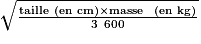

On peut lire au sujet d'un médicament :
Pour calculer la surface corporelle en m2 on utilise la formule de Mosteller suivante :
Surface corporelle en m2 = 
| Patient | Lou | Joé |
|---|---|---|
| Âge | 5 ans | 5 ans |
| Taille (m) | 1,05 | 1,50 |
| Masse (kg) | 17,5 | 50 |
| Dose Administrée | 50 mg | 100 mg |
Dans cette question, toute trace de recherche, même incomplète, sera prise en compte dans l'évaluation.